Handbook - Hermaphrodite
Muscle System Introduction see also Somatic Muscle Nonstriated Muscle GLR Cells Head Mesodermal Cell
3 Excitation-contraction coupling
Figures 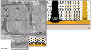 MusFIG 1A&B - The contractile apparatus in C. elegans 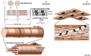 MusFIG 1C&D - The contractile apparatus in vertebrates 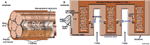 MusFIG 2 - Schematic of T-tubule structure in vertebrate muscle 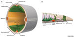 MusFIG 3 - Muscle arms 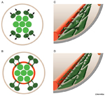 MusFIG 4 - Muscle arm development 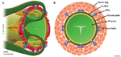 MusFIG 5A&B - Muscle arms of the head muscles 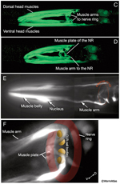 MusFIG 5C-F - Muscle arms of the head muscles 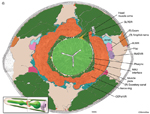 MusFIG 5G - Color-coded TEM of muscle arms from posterior head muscles 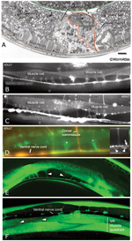 MusFIG 6A-F - Muscle arms of body wall muscles 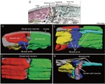 MusFIG 6G-K - Interdigitation of muscle arms from dorsal neck muscles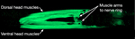 MusMOVIE 1 - 3-D reconstruction of head muscles and muscle arms 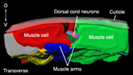 MusMOVIE 2 - Interdigitation of neck muscle arms